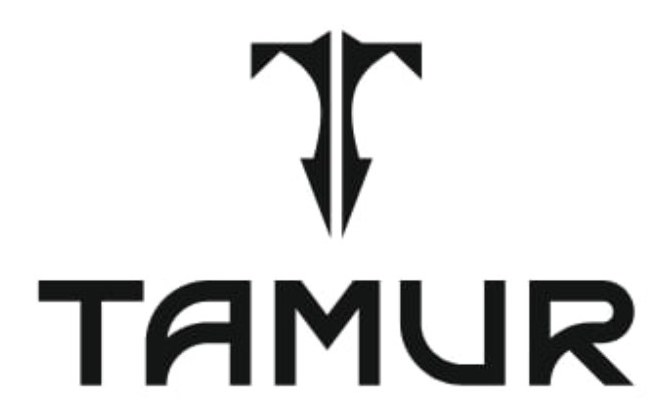

YANGI MANZIL · YANGI BOSQICH
OPEN THE SAFE
TAMUR TERAKZOR24-OKTABR · OCHILISHSIZNI KUTAMIZ!
✦
Sirli seyfning 5 xonali kodini topishga harakat qiling. Sizda atigi 3 ta imkoniyat bor.
TAMUR · OPEN THE SAFE
SEYF KODI
5 ta raqamni aylantiring va kodingizni tasdiqlang.
BIRINCHI URINISH
QABUL QILINDI
Agar kodingiz to‘g‘ri bo‘lsa, siz bilan bog‘lanishimiz uchun telefon raqamingizni to‘g‘ri qoldiring.
TAMUR · 24 OKTABR
RAHMAT!
✦
Urinishlaringiz qabul qilindi. Natijalar 24-oktabrda e’lon qilinadi.